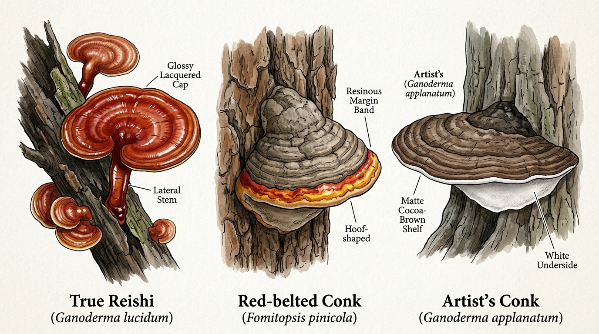
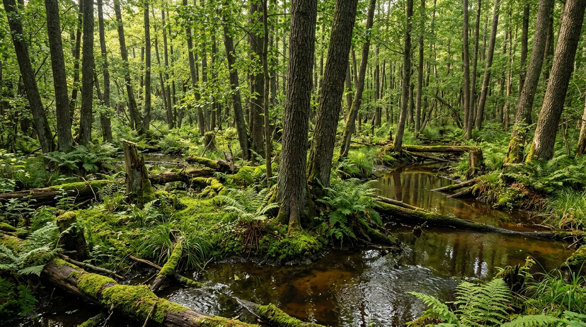
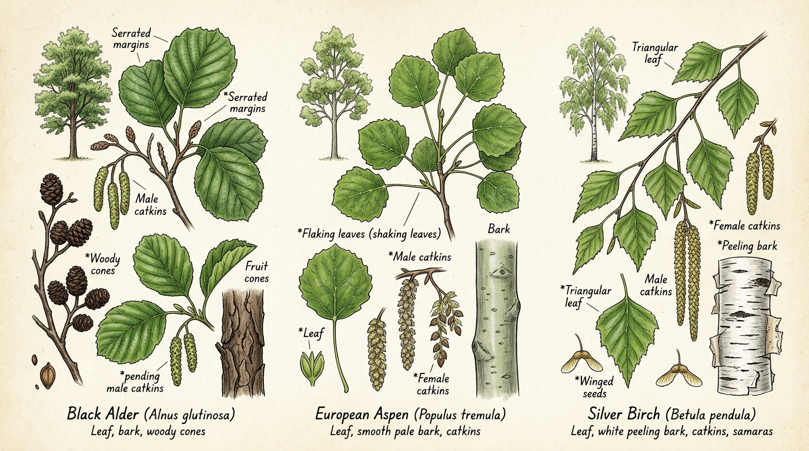

09. Wild Reishi in Helsinki: Occurrence, Wetland Habitats, Host Trees & Lookalike Defense
Lakkakääpä Helsingin Seudulla • 赫尔辛基野生灵芝生态、宿主树种与拟假芝混淆防线Finding wild Reishi (Ganoderma lucidum, Finnish: lakkakääpä, Chinese: 灵芝 / 赤芝) in the forests surrounding Helsinki is an extraordinary biological event. While common culinary mushrooms like Golden Chanterelles (Cantharellus cibarius) and Porcini (Boletus edulis) carpet hundreds of hectares across Uusimaa each autumn, lakkakääpä is an elusive, specialized polypore with very specific ecological requirements.
This handbook chapter provides a complete field guide to wild Reishi in Southern Finland: the realistic odds of finding it, the exact wetland microclimates and host trees to scan, a foolproof defense against ubiquitous lookalikes, and verified high-value video masterclasses.
1. Occurrence & Foraging Likelihood around Helsinki
The Ecological Baseline: Can You Find It?
Yes, but it is rare (< 5% probability on casual hikes).Finland spans multiple ecological vegetation zones, from the northern subarctic birch tundra to the southern coastal fringe. The Helsinki Metropolitan Area and Uusimaa lie directly within Finland’s narrow hemiboreal zone—the warmest, most biologically diverse forest zone in the country.
In Finland's national biodiversity database (Laji.fi), Ganoderma lucidum (lakkakääpä) is classified as Least Concern (LC / elinvoimainen) nationally, but its wild fruiting bodies are restricted to ancient moist deciduous stands and wetland margins. It does not grow in standard commercial pine timber plantations or well-trodden dry spruce heaths.
[ Helsinki / Uusimaa Hemiboreal Zone ] --> Core northern edge of natural Ganoderma lucidum
[ Target Fruiting Period ] --> August to late October (annual conk; persists dried into winter)
[ Substrate Niche ] --> Decaying hardwood logs, stumps, root flares in standing wetlands
2. Visual Lookalike Defense: True Reishi vs. Common Impostors
In the forests of Nuuksio, Sipoonkorpi, and Keskuspuisto, over 95% of reported "Reishi" sightings are actually two very common native polypores: the Red-belted conk (Fomitopsis pinicola) and the Artist's conk (Ganoderma applanatum).

Comprehensive Diagnostic Matrix
| Identification Trait | True Reishi (Ganoderma lucidum / Lakkakääpä) | Red-Belted Conk (Fomitopsis pinicola / Kantokääpä) | Artist's Conk (Ganoderma applanatum / Lattakääpä) |
|---|---|---|---|
| Cap Surface | High-gloss lacquer, glossy deep red-orange, chestnut-mahogany to amber-yellow edge. | Dull grey-black core with a resinous yellow-orange-red band along the active margin. | Matte, dull cocoa-brown to greyish, heavily dusted with powdery brown spores; no lacquer. |
| Stem (Stipe) | Distinct lateral or eccentric stalk (woody, twisted, shiny dark reddish-black). | No stem (sessile); attaches broadly and directly to the wood. | No stem (sessile); wide, flat bracket emerging horizontally from trunk. |
| Shape | Kidney-shaped, fan-like, or circular, often with undulating wavy margins. | Thick, hoof-shaped or triangular shelf, rigid and woody. | Extremely flat, wide bracket, shelf-like with thin leading edge. |
| Pore Surface (Underside) | Creamy-white to buff; bruises pale brownish when handled fresh. | Cream-white to yellowish; often exudes clear guttation droplets when growing. | Pure white when fresh; immediately bruises dark sepia-brown when scratched. |
| Host Wood | Deciduous hardwoods (Black Alder, Aspen, Birch, rarely Oak). | Conifers (Spruce, Pine), occasionally Birch. | Deciduous hardwoods (Birch, Aspen, Lime/Linden, Alder). |
| Frequency in Helsinki | Rare / Localized in wetlands. | Ubiquitous (found in every forest). | Very Common in parks, old woods, and deadwood. |
- Look for the stem: True wild Ganoderma lucidum in Fennoscandia almost always develops a distinct lateral or eccentric stipe (stalk). If the bracket is a stemless, hoof-shaped block fused directly into a pine or spruce stump, it is Fomitopsis pinicola.
- Look for the genuine lacquer: The red band on Fomitopsis pinicola can look glossy when wet from rain, but Ganoderma lucidum possesses a true microscopic crust of varnished intercellular lacquer over its entire top surface that shines even in dry conditions.
3. Prime Wetland Habitats around Helsinki
To find wild lakkakääpä, you must leave dry footpaths and seek out permanently humid, standing wetland microclimates.

The Primary Ecosystem: Tervaleppäkorpi (Coastal Black Alder Swamps)
- Ecological Dynamics: Tervaleppäkorpi is a protected mire habitat type dominated by Black Alder (Alnus glutinosa). The root systems form elevated buttressed mounds (mättäät) surrounded by slow-moving or stagnant tea-colored water rich in humic acids.
- Microclimate: Constant 85–95% ambient humidity, shaded canopy, high volume of semi-submerged deadwood and moss-blanketed fallen trunks.
- Prime Locations in Uusimaa:
4. Host & Partner Tree Field Diagnostics
Ganoderma lucidum is a white-rot wood-decay fungus that feeds on lignin in dead or dying hardwoods. Around Helsinki, it associates with three main tree species:

1. Black Alder (Alnus glutinosa / Tervaleppä) — The #1 Host
- The Tree: Finland's native water-loving deciduous giant, forming extensive shoreline groves.
- Bark: Dark charcoal-grey to blackish-brown, deeply fissured and rough.
- Leaves: Distinctive round or obovate leaves with a notched or indented apex (the leaf tip indents inwards rather than coming to a sharp point). Glossy deep green with serrated margins.
- Cones: Small, persistent woody cones (leppäkävyt) that linger on branches throughout autumn and winter.
- Where Reishi Grows: At the submerged base, exposed root flares, or mossy fallen trunks of old, dying alders.
2. European Aspen (Populus tremula / Haapa)
- The Tree: Key ecological keystone species in Finnish boreal forests, supporting hundreds of specialized fungal and insect species.
- Bark: Smooth, pale greenish-grey on young to middle-aged trunks; deeply furrowed and diamond-cracked at the base of mature trees.
- Leaves: Broadly circular with blunt, wavy teeth. Long, laterally flattened petioles cause the leaves to flutter and rustle in the slightest breeze (vavisevat haavanlehdet).
- Where Reishi Grows: Giant fallen rotting aspen logs in shaded valleys and damp ravines.
3. Silver Birch & Downy Birch (Betula pendula / Betula pubescens)
- The Tree: Widespread across all Finnish forest types. Downy birch (hieskoivu) tolerates waterlogged mire soils, while silver birch (rauduskoivu) prefers well-drained heaths.
- Bark: Bright chalky-white papery bark that peels in horizontal strips, developing dark rough rectangular plates at the base.
- Leaves: Triangular to diamond-shaped with doubly serrated margins.
- Where Reishi Grows: Moss-covered birch stumps and decomposing nurse logs in wet depressions.
5. High-Value Verified Video Masterclasses
To build true field confidence in identifying Ganoderma species and extracting their therapeutic constituents, study these four verified, authoritative video masterclasses:
1. Field Identification & Medicinal Chemistry — Learn Your Land
- Instructor: Adam Haritan (Renowned Botanist & Forager, Learn Your Land)
- Core Topics: Microscopic and macroscopic markers of Ganoderma, identifying varnished shelf fungi in the wild, testing pore bruise reactions, and understanding bioactive triterpenes.
- Direct Video Link: Watch: Reishi Mushroom Identification & Medicinal Benefits on YouTube
2. Sustainable Wild Harvesting Ethics — Learn Your Land
- Instructor: Adam Haritan (Learn Your Land)
- Core Topics: Ethical field foraging, assessing the maturity stage of lacquered conks, harvesting without destroying mycelial wood networks, and field drying techniques.
- Direct Video Link: Watch: Harvesting Wild Reishi Mushrooms on YouTube
3. Deep Dive into Ganoderma lucidum Growth & Anatomy — FreshCap Mushrooms
- Channel: FreshCap Mushrooms
- Core Topics: The unique anatomical morphology of Ganoderma lucidum, how antler vs conk shapes form under different CO2 levels, lacquer development, and pore structure under magnification.
- Direct Video Link: Watch: Unlocking The Secrets of Reishi (Ganoderma lucidum) on YouTube
4. Dual-Extraction Tincture & Decoction Protocol — Spore n' Sprout
- Channel: Spore n' Sprout
- Core Topics: Step-by-step laboratory and kitchen extraction protocol: boiling water decoction for water-soluble polysaccharides (beta-glucans) combined with high-proof alcohol maceration for alcohol-soluble triterpenoids (ganoderic acids).
- Direct Video Link: Watch: How to Make Reishi Dual Extract Tincture on YouTube
6. Extraction Science & Finnish Biotechnology
Reishi is biologically inedible in culinary dishes because its flesh is hard, corky, and fibrous like wood. To benefit from its compounds, it must be extracted.
The Dual-Extraction Science
True Reishi contains two primary classes of medicinal compounds with opposing solubility profiles:- Beta-D-Glucans (Polysaccharides): Water-soluble immune-modulating compounds. Extracted via prolonged hot water decoction (simmering at 85–95°C for 2–4 hours).
- Ganoderic Acids (Triterpenoids): Alcohol-soluble bitter compounds responsible for adaptogenic, anti-inflammatory, and liver-supportive properties. Extracted via maceration in 60–80% ethanol for 4–6 weeks.
Dried Wild Reishi (Sliced thin)
├── 1. Alcohol Maceration (60–80% organic spirit, 4–6 weeks) ──> Triterpenes & Bitter Sterols
└── 2. Water Decoction (Simmer leftover marc in water 2–4 hrs) ──> Polysaccharides & Beta-Glucans
└── Combined into a balanced 25–30% ABV shelf-stable Dual-Extract Tincture
Finnish Scientific Research & Cultivation
- Natural Resources Institute Finland (Luke): Groundbreaking research led by Dr. Marta Cortina-Escribano (Selective breeding and taxonomy of laccate Ganoderma species originating from Finland, Luke / University of Helsinki) analyzed wild Finnish Ganoderma isolates. The research established that native Finnish strains are genetically adapted to cold climates and thrive on Finnish forestry side-streams (birch and aspen woodchips).
- Commercial Finnish Reishi (KÄÄPÄ Biotech): In Karjalohja (Lohja, Uusimaa), Finnish biotechnology leaders cultivate organic Reishi on certified birch substrates, utilizing native strains derived from Finnish forests rather than harvesting endangered wild populations.
7. Legal & Conservation Guidelines (Everyman's Right)
When foraging in Finland, you must strictly observe the boundaries of Everyman's Right (Jokamiehenoikeus):
- Protected Areas: In strict nature reserves (luonnonsuojelualueet) such as core zones of Vanhankaupunginlahti, local bylaws forbid the removal of wood-decay fungi, which serve as essential habitat for rare saproxylic beetles.
- Citizen Science Best Practice: Because wild lakkakääpä is a rare ecological indicator in Finland, mycologists strongly recommend leaving the fruiting body intact on the log, taking sharp macro photographs (cap, pore underside, stem, host wood), and recording your sighting on Laji.fi to support Finnish biodiversity monitoring.
- Explore the Species in the Interactive Guide: View the full diagnostic profile and interactive photo gallery directly in the Interactive Field Companion.